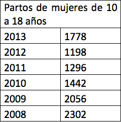
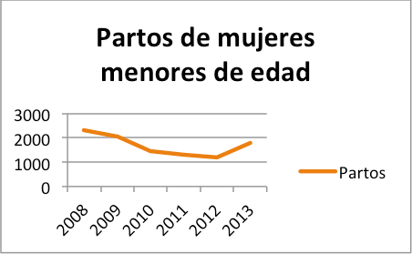
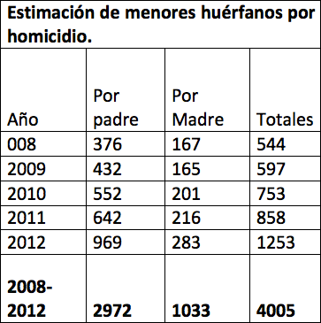
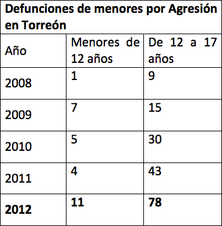
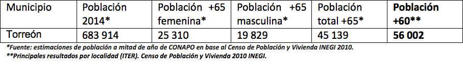
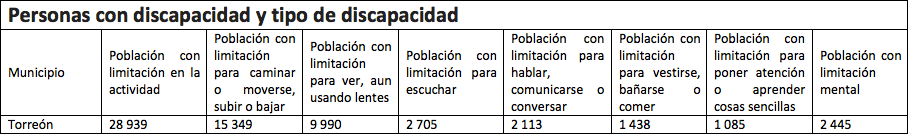
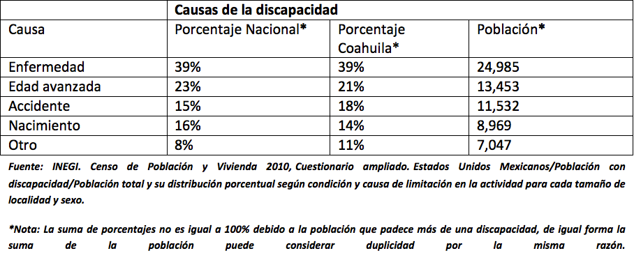

La infancia es una etapa temprana en la cual se marca el desarrollo fisiológico y cognitivo de las personas. El comportamiento de la sociedad en temas y estados temporales específicos, así como los posibles escenarios en el que se desenvolverán las siguientes generaciones, puede ser analizado a la luz de las estadísticas focalizadas a la situación de los grupos vulnerables, que no únicamente se centra en la juventud, sino en los adultos mayores y personas con discapacidad.
La vulnerabilidad de estos grupos radica en que no cuentan por sí mismos con la capacidad de desempeñar sus actividades cotidianas, teniendo que hacer un esfuerzo extra representando cuestiones económicas y también sociales en el caso de los adultos mayores y personas con discapacidad. En los niños y niñas, el tema gira en torno a la preparación de las siguientes generaciones y una vulnerabilidad temporal que si bien, está delimitada durante un tiempo específico, es el desarrollo de esa etapa el que marcará en buena medida su desenvolvimiento en edad adulta.
La dinámica del crecimiento de la población y su problemática no queda solamente en cuestiones demográficas cuantitativas, traducido a mayor cantidad de personas, menores recursos para satisfacer sus necesidades. Tenemos que considerar con igual importancia la calidad con la que las futuras generaciones están siendo preparadas y concientizadas.
Infancia, alimentación y educación
El CONEVAL utiliza un enfoque multidimensional para sus evaluaciones y proyectos relacionados con la pobreza definiendo el “rezago alimenticio” como “carencia por acceso a la alimentación”, por lo cual “se considera en situación de carencia por acceso a la alimentación a los hogares que presenten un grado de inseguridad alimentaria moderado o severo.
Si bien este concepto no se desagrega por grupos de edad, CONEVAL complementa y aplica un enfoque en el que atender a la infancia es el fin último, ya que “el grado de inseguridad alimentaria refleja el proceso que comienza con la reducción en el consumo de calorías, primero entre los adultos y luego entre los niños. Esta reducción es leve al comienzo, pero puede llevar al hambre, primero entre los adultos, y eventualmente entre los niños.
Porcentaje de rezago en el acceso a la alimentación en el municipio
El nivel de la calidad de vida se encuentra relacionado con el grado de educación de la persona. Al igual que el concepto de rezago alimentario, CONEVAL define al rezago educativo como “Carencia por rezago educativo” y forma parte del enfoque multidimensional de la pobreza.
De acuerdo con la Norma de Escolaridad Obligatoria del Estado Mexicano se considera con carencia por rezago educativo a la población que cumpla con los siguientes criterios:
- Tiene 3 a 15 años, no cuenta con la educación básica obligatoria y no asiste a un centro de educación forma; o,
- Tiene 16 años o más, nació a partir de 1982 y no cuenta con el nivel de educación obligatoria vigente en el momento en que debía haberla cursado (primaria completa), o,
- Tiene 16 años o más, nació a partir de 1982 y no cuenta con el nivel de educación obligatoria (secundaria completa).
En las cifras proporcionadas se contemplan todos los rangos de edades, aunque el tema de la niñez se circunscribe a la obligatoriedad de asistir a la escuela.
Porcentaje de rezago educativo en el municipio
Maternidad adolescente
Datos de INEGI de 2010 señalan la maternidad adolescente en un 13.9% de las mujeres de entre 14 y 19 años en Torreón. Durante 2013 en la ciudad de Torreón se registraron 1778 partos en donde la madre tiene menos de 18 años, que si bien es menor que los eventos de 2008 en donde se registraron 2302, reporta un repunte a comparación de los últimos tres años. La tendencia generalizada marca a la baja, pero el aumento de 2012 a 2013 debe de ser considerado para diseñar una estrategia.
 Infancia y vulnerabilidad por la delincuencia
El lustro anterior aconteció en la región un fenómeno social sustentado en la violencia que provocó una situación atípica repercutiendo en todos los estratos sociales. En los niños y niñas no fue la excepción, ya que además de la relación entre homicidios y orfandad, las defunciones por agresión de personas menores de 12 años y del grupo entre 12 y 17 años tuvieron un incremento más notorio aún en 2012.
 Adultos mayores
La vulnerabilidad del adulto mayor se diferencia de la infancia primero por su temporalidad y segundo por implicar la degeneración de la salud gradualmente, lo cual significa que cada lapso de tiempo aumenta el grado de vulnerabilidad y el nivel de dependencia sobre el círculo familiar del involucrado.
En Torreón la población proyectada para 2014 de adultos mayores de 65 años es de 45,139. De los cuales el 56% son mujeres y el 43% hombres, acentuándose la proporción de hombres y mujeres en esta edad debido a la esperanza de vida.
En 2010 se contabilizaron un total de 56,002 adultos mayores (+60 años) representando para ese año un 8.8% de la población municipal.
Vulnerabilidad por discapacidad
El desempeño de la población en un sistema determinado depende de su aptitud para cumplir con las normatividades sociales explicitas e implícitas que le son exigidas. El adaptarse a las condiciones imperantes y cambiantes requiere, además de disposición de afrontar la realidad, el encontrarse en óptimas condiciones físicas y mentales. Las personas con discapacidad viven una compleja realidad, ya que pueden estar en la situación en la cual llegaron a vivir su actividad social normal, es decir, que su discapacidad es consecuencia de un accidente o enfermedad adquirida, o bien, haberla padecido desde su nacimiento. Esto legitima la demanda de este segmento poblacional de ser incluidos en la dinámica social cotidiana, la oportunidad de participar y competir en el campo social, económico y cultural en igualdad de condiciones.
Principales resultados por localidad (ITER). Censo de Población y Vivienda 2010 INEGI.
El 10% de la población de Torreón vive con algún tipo de discapacidad. Según datos de INEGI, a nivel Nacional el 23% es a causa de la edad avanzada, 39% por secuela de alguna enfermedad, 16% por nacimiento o herencia, 15% a causa de un accidente y el restante 8% por diversas causas.
En Coahuila para poblaciones mayores de 100,00 habitantes los porcentajes según INEGI son los siguientes: Por nacimiento 14%, por enfermedad 39%, por accidente 18%, por edad avanzada 21%, otros 11.
Fuentes
- Instituto Nacional de Estadística Geografía e Informática, INEGI. Censo de población y Vivienda 2010. Consulta en línea. http://www.inegi.org.mx
- Consejo Nacional de Evaluación de las Políticas de Desarrollo Social, CONEVAL. Medición de la Pobreza. Consulta en línea. http:/coneval.gob.mx
- Consejo Nacional de Población. Proyecciones de la población 2010-2050Consulta en línea: http://www.conapo.gob.mx/es/conapo/proyecciones